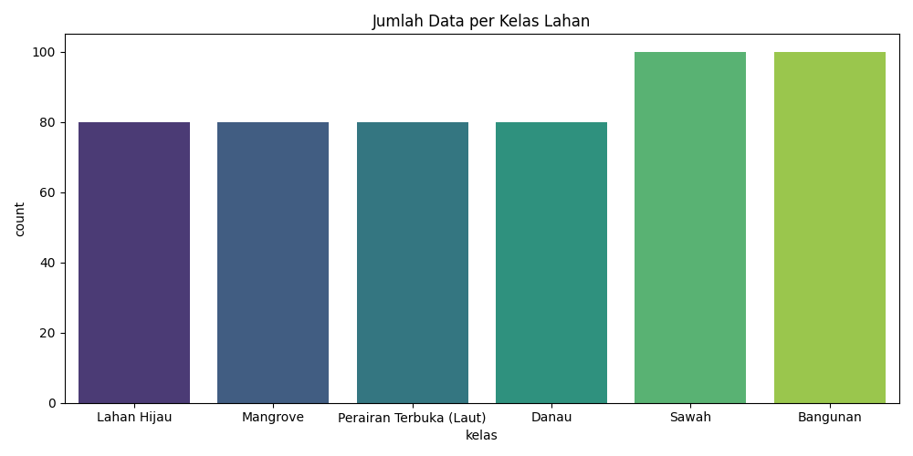
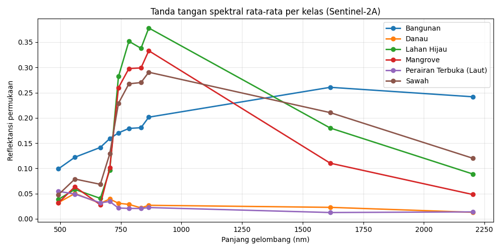
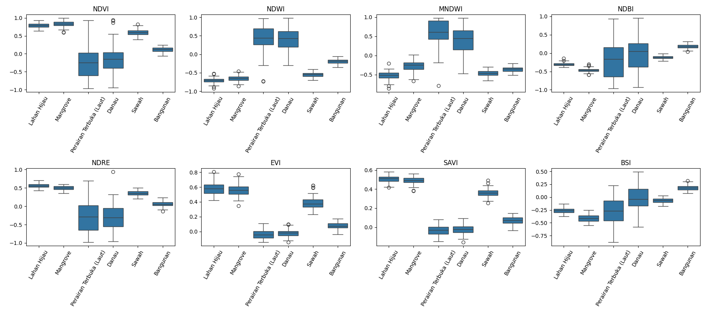
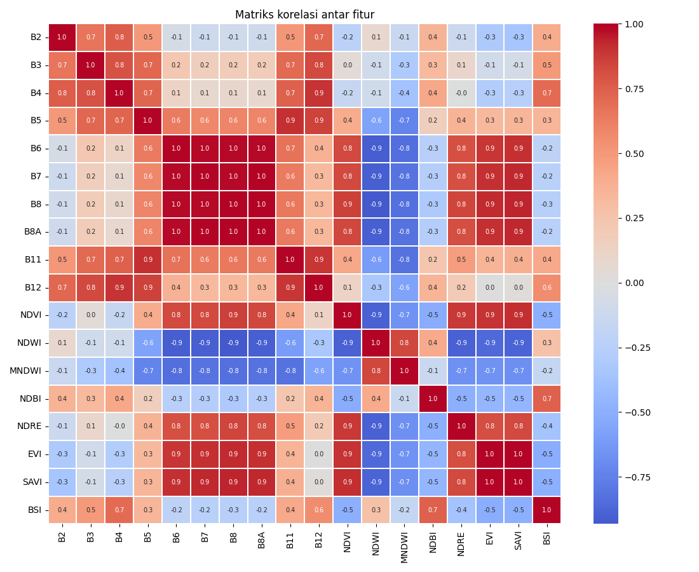
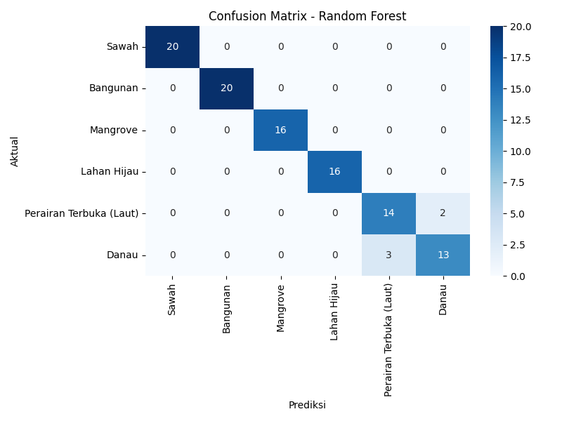

Klasifikasi Penggunaan dan Tutupan Lahan (Land Use / Land Cover) Jawa Timur#
Citra Sentinel-2A + Algoritma Random Forest + Visualisasi Folium (Google Satellite)#
Mata kuliah: Penambangan Data Sains (Data Mining)
Materi ini berisi alur lengkap: pemahaman data → pengumpulan data → deskripsi fitur → eksplorasi data → pemodelan Random Forest → eksperimen → peta hasil klasifikasi. Setiap tahap disertai penjelasan agar mudah diikuti.
Daftar isi
Data Understanding (tujuan analisis, acuan klasifikasi, wilayah, kelas, band Sentinel-2A)
Data Collection (persiapan lingkungan, pembacaan shapefile, penentuan sampel, ekstraksi citra)
Deskripsi Fitur dan Rumusnya
Eksplorasi Data (EDA)
Pemodelan Random Forest (data training dan testing)
Eksperimen dan Evaluasi (rasio, fitur, hiperparameter)
Peta Hasil Klasifikasi (Folium + Google Satellite WMS)
Kesimpulan
1. Data Understanding#
1.1 Tujuan Analisis Land Use and Land Classification#
Mengklasifikasikan tutupan/penggunaan lahan di wilayah Jawa Timur ke dalam 6 kelas (sawah, bangunan, mangrove, lahan hijau, perairan terbuka/laut, danau) berdasarkan nilai reflektansi band Sentinel-2A dan indeks spektralnya.
Memahami karakteristik spektral tiap kelas lahan, yaitu band dan indeks mana yang paling membedakan satu kelas dari kelas lain.
Membangun dan mengevaluasi model Random Forest yang dinilai memiliki akurasi lebih baik dibandingkan metode dasar seperti Naive Bayes untuk data spasial multispektral.
Menyajikan peta hasil klasifikasi menggunakan WMS satelit Google Maps melalui integrasi dengan Folium.
1.2 Acuan Klasifikasi Lahan di Indonesia#
Acuan standar klasifikasi lahan di Indonesia diatur dalam SNI 7645-1:2014 tentang Klasifikasi Penutup Lahan. Standar ini mengelompokkan penutup lahan menjadi hierarki yang komprehensif, tidak hanya membedakan sawah dan non-sawah, tetapi juga memisahkan daerah bervegetasi, perairan (alami dan buatan), serta lahan terbangun. Eksperimen ini menggunakan 6 kelas yang mengacu pada pembagian secara umum pada SNI tersebut:
Sawah
Bangunan (Permukiman/Lahan Terbangun)
Mangrove (Vegetasi Pesisir)
Lahan Hijau (Hutan/Vegetasi Non-Sawah)
Perairan Terbuka (Laut)
Danau (Ranu)
1.3 Wilayah Studi dan Eksperimen Kelas#
Provinsi Jawa Timur. Wilayah ini memiliki tutupan lahan yang beragam mencakup taman nasional, area padat penduduk, hingga kawasan perairan terbuka.
1.4 Band pada Sentinel-2A#
Sentinel-2A membawa sensor MSI (MultiSpectral Instrument) dengan 13 band. Band yang digunakan dalam analisis ini:
Band |
Nama |
Resolusi |
Kegunaan |
|---|---|---|---|
B2 |
Blue |
10 m |
Penetrasi air, pembeda tanah/vegetasi, bangunan |
B3 |
Green |
10 m |
Puncak pantulan vegetasi sehat, indeks air |
B4 |
Red |
10 m |
Penyerapan klorofil |
B5 |
Red Edge 1 |
20 m |
Kandungan klorofil, kesehatan vegetasi |
B6 |
Red Edge 2 |
20 m |
Struktur kanopi vegetasi |
B7 |
Red Edge 3 |
20 m |
Struktur kanopi vegetasi |
B8 |
NIR |
10 m |
Biomassa vegetasi, pemisah daratan dan air |
B8A |
Narrow NIR |
20 m |
Vegetasi, kadar air tanaman |
B11 |
SWIR 1 |
20 m |
Kelembapan vegetasi/tanah, area terbangun |
B12 |
SWIR 2 |
20 m |
Tanah terbuka, area terbangun |
2. Data Collection#
Bagian ini menjelaskan bagaimana data citra satelit mentah dapat diekstrak menjadi tabel dataset. Alur utamanya:
Shapefile (6 kelas) -> titik sampel -> ekstraksi nilai band Sentinel-2A (Copernicus) -> hitung indeks spektral -> dataset fitur (CSV)
2.1 Persiapan Lingkungan dan Konfigurasi#
Citra diambil dari Copernicus Data Space Ecosystem (CDSE) melalui layanan Sentinel Hub Process API (gratis dengan kuota bulanan). Layanan ini mengolah citra di server Copernicus (masking awan dan komposit median), sehingga kita hanya perlu mengunduh nilai piksel yang dibutuhkan dan tidak perlu mengunduh file citra mentah berukuran ratusan MB.
import os, math, time, getpass, warnings
warnings.filterwarnings("ignore")
import numpy as np
import pandas as pd
import matplotlib.pyplot as plt
import seaborn as sns
import geopandas as gpd
import folium
from folium.raster_layers import ImageOverlay
from shapely.geometry import Point
from IPython.display import display, Markdown
# Contoh penggunaan library sentinelhub untuk Copernicus
# from sentinelhub import SHConfig, SentinelHubRequest, DataCollection, BBox, CRS, MimeType
2.2 Membaca Shapefile (QGIS/ZIP) dan Penentuan Titik Sampel#
Data poligon area tiap kelas diperoleh dari file kompresi dan shapefile QGIS (QGZ) berikut. Seluruh poligon diekstraksi dan dikonversi ke sistem koordinat WGS84 geografis (EPSG:4326). Dari poligon tersebut, dilakukan pengambilan sampel titik secara acak (random sampling) menggunakan pustaka geopandas sesuai target jumlah berikut:
ID |
Kelas |
Berkas shapefile |
Target jumlah sampel |
|---|---|---|---|
1 |
Sawah |
|
100 |
2 |
Bangunan |
|
100 |
3 |
Mangrove |
|
80 |
4 |
Lahan Hijau |
|
80 |
5 |
Perairan Terbuka (Laut) |
|
80 |
6 |
Danau |
|
80 |
Total |
520 sampel, 6 kelas |
Catatan: File asli bersumber dari kompresi seperti 50 Sawah gqis.qgz, Lahan hijau.zip, laut.zip, Danau.zip, dan Mangrove Zaidan.zip yang diekstrak menjadi file .shp.
2.3 Pengambilan Citra Sentinel-2A#
Pengambilan dilakukan melalui sebuah evalscript (skrip JavaScript kecil) yang dijalankan di server Copernicus dengan langkah:
Filter: periode tanggal dan persentase awan (misal
MAX_CLOUD = 30).Masking awan: memakai band SCL (Scene Classification Layer). Piksel awan, bayangan awan, dan salju/es dibuang.
Komposit median: nilai median dari seluruh citra bersih pada periode terpilih dihitung per piksel.
Penyeragaman resolusi: band 20 m otomatis disampel ulang ke grid 10 m.
2.4 Penyimpanan dan Pemuatan Dataset#
Untuk kemudahan, proses ekstraksi API yang memakan waktu di atas telah disimpan ke dalam file CSV (dataset_sentinel2_jatim.csv). File ini akan kita gunakan langsung untuk analisis selanjutnya.
import pandas as pd
import numpy as np
import matplotlib.pyplot as plt
import seaborn as sns
import folium
from sklearn.ensemble import RandomForestClassifier
from sklearn.model_selection import train_test_split
from sklearn.metrics import accuracy_score, classification_report, confusion_matrix
# Memuat dataset hasil ekstraksi
df = pd.read_csv('dataset_sentinel2_jatim.csv')
display(df.head())
kelas_id |
kelas |
poligon_id |
lon |
lat |
B2 |
B3 |
B4 |
B5 |
B6 |
B7 |
B8 |
B8A |
B11 |
B12 |
NDVI |
NDWI |
MNDWI |
NDBI |
NDRE |
EVI |
SAVI |
BSI |
|---|---|---|---|---|---|---|---|---|---|---|---|---|---|---|---|---|---|---|---|---|---|---|
4 |
Lahan Hijau |
0 |
112.481 |
-6.9327 |
0.0373284 |
0.0387974 |
0.054836 |
0.0589178 |
0.273305 |
0.340697 |
0.342223 |
0.388425 |
0.196901 |
0.0793139 |
0.723789 |
-0.79635 |
-0.670789 |
-0.269551 |
0.706248 |
0.516409 |
0.480548 |
-0.202465 |
3 |
Mangrove |
28 |
112.826 |
-7.34553 |
0.0340131 |
0.055427 |
0.0220972 |
0.0963175 |
0.277231 |
0.28902 |
0.299058 |
0.33275 |
0.133405 |
0.0454954 |
0.862389 |
-0.687282 |
-0.41295 |
-0.383044 |
0.51278 |
0.588505 |
0.505923 |
-0.363443 |
4 |
Lahan Hijau |
29 |
112.301 |
-6.94279 |
0.0403789 |
0.0681401 |
0.039785 |
0.11461 |
0.273071 |
0.330074 |
0.369655 |
0.37093 |
0.171473 |
0.089013 |
0.805661 |
-0.688712 |
-0.43125 |
-0.366237 |
0.526664 |
0.631681 |
0.544076 |
-0.319939 |
3 |
Mangrove |
20 |
112.68 |
-7.03791 |
0.0373183 |
0.0679005 |
0.0385076 |
0.0710112 |
0.239585 |
0.329603 |
0.284292 |
0.339163 |
0.0996959 |
0.0511951 |
0.761415 |
-0.614413 |
-0.189714 |
-0.480734 |
0.600278 |
0.497358 |
0.448076 |
-0.398872 |
5 |
Perairan Terbuka (Laut) |
17 |
114.574 |
-7.07992 |
0.0412647 |
0.0458061 |
0.0298306 |
0.037196 |
0.0415861 |
0.0309907 |
0.0344325 |
0.0416916 |
0.0185456 |
0.00944939 |
0.0716092 |
0.141748 |
0.423617 |
-0.299876 |
-0.0385813 |
0.0127273 |
0.0122332 |
-0.2202 |
3. Deskripsi Fitur dan Rumusnya#
Selain 10 band reflektansi asli, fitur turunan berupa 8 indeks spektral digunakan untuk meningkatkan performa model:
NDVI (Normalized Difference Vegetation Index): \(\frac{\rho_{B8}-\rho_{B4}}{\rho_{B8}+\rho_{B4}}\)
NDWI (Normalized Difference Water Index): \(\frac{\rho_{B3}-\rho_{B8}}{\rho_{B3}+\rho_{B8}}\)
MNDWI (Modified NDWI): \(\frac{\rho_{B3}-\rho_{B11}}{\rho_{B3}+\rho_{B11}}\)
NDBI (Normalized Difference Built-up Index): \(\frac{\rho_{B11}-\rho_{B8}}{\rho_{B11}+\rho_{B8}}\)
NDRE (Normalized Difference Red Edge): \(\frac{\rho_{B8}-\rho_{B5}}{\rho_{B8}+\rho_{B5}}\)
EVI (Enhanced Vegetation Index): \(2.5 \times \frac{\rho_{B8}-\rho_{B4}}{\rho_{B8}+6\rho_{B4}-7.5\rho_{B2}+1}\)
SAVI (Soil Adjusted Vegetation Index): \(1.5 \times \frac{\rho_{B8}-\rho_{B4}}{\rho_{B8}+\rho_{B4}+0.5}\)
BSI (Bare Soil Index): \(\frac{(\rho_{B11}+\rho_{B4})-(\rho_{B8}+\rho_{B2})}{(\rho_{B11}+\rho_{B4})+(\rho_{B8}+\rho_{B2})}\)
Implementasi Perhitungan Fitur Indeks Spektral dengan Python:
def tambah_indeks(d):
"""Menghitung 8 indeks spektral dari DataFrame berisi kolom band B2..B12"""
d = d.copy()
e = 1e-9 # menghindari pembagian dengan nol
nd = lambda a, b: (a - b) / (a + b + e)
d["NDVI"] = nd(d["B8"], d["B4"])
d["NDWI"] = nd(d["B3"], d["B8"])
d["MNDWI"]= nd(d["B3"], d["B11"])
d["NDBI"] = nd(d["B11"], d["B8"])
d["NDRE"] = nd(d["B8"], d["B5"])
d["EVI"] = 2.5 * (d["B8"] - d["B4"]) / (d["B8"] + 6 * d["B4"] - 7.5 * d["B2"] + 1)
d["SAVI"] = 1.5 * (d["B8"] - d["B4"]) / (d["B8"] + d["B4"] + 0.5)
d["BSI"] = (((d["B11"] + d["B4"]) - (d["B8"] + d["B2"])) /
((d["B11"] + d["B4"]) + (d["B8"] + d["B2"]) + e))
return d
# Terapkan perhitungan ke dataset
# df = tambah_indeks(df)
4. Eksplorasi Data (EDA)#
4.1 Jumlah Data per Kelas#
Melihat distribusi jumlah sampel per kelas untuk memastikan keseimbangan dataset.
print("Total Data:", len(df))
print("Jumlah Kelas:", df['kelas'].nunique())
plt.figure(figsize=(10, 5))
sns.countplot(data=df, x='kelas', palette='viridis')
plt.title('Jumlah Data per Kelas Lahan')
plt.show()

4.2 Statistik Deskriptif Fitur#
Nilai rata-rata per kelas membantu melihat fitur mana yang membedakan satu kelas dengan kelas lainnya.
FITUR = ['B2', 'B3', 'B4', 'B5', 'B6', 'B7', 'B8', 'B8A', 'B11', 'B12',
'NDVI', 'NDWI', 'MNDWI', 'NDBI', 'NDRE', 'EVI', 'SAVI', 'BSI']
display(df[FITUR].describe().T.round(4))
print("\nRata-rata fitur per kelas:")
display(df.groupby("kelas")[FITUR].mean().round(3))
count |
mean |
std |
min |
25% |
50% |
75% |
max |
|
|---|---|---|---|---|---|---|---|---|
B2 |
520 |
0.0523 |
0.0282 |
0.001 |
0.033 |
0.0462 |
0.0642 |
0.1354 |
B3 |
520 |
0.0726 |
0.0305 |
0.003 |
0.0515 |
0.0668 |
0.0895 |
0.1655 |
B4 |
520 |
0.0604 |
0.0444 |
0.001 |
0.029 |
0.0432 |
0.0777 |
0.1771 |
B5 |
520 |
0.097 |
0.0479 |
0.001 |
0.0492 |
0.1006 |
0.1339 |
0.2059 |
B6 |
520 |
0.1681 |
0.1022 |
0.001 |
0.0394 |
0.201 |
0.2559 |
0.3178 |
B7 |
520 |
0.1933 |
0.1252 |
0.001 |
0.0385 |
0.2218 |
0.2941 |
0.387 |
B8 |
520 |
0.1911 |
0.1244 |
0.001 |
0.0327 |
0.2275 |
0.2969 |
0.3697 |
B8A |
520 |
0.2115 |
0.137 |
0.001 |
0.0383 |
0.243 |
0.3282 |
0.4147 |
B11 |
520 |
0.1406 |
0.0947 |
0.001 |
0.031 |
0.1695 |
0.2192 |
0.2969 |
B12 |
520 |
0.0947 |
0.0829 |
0.001 |
0.024 |
0.078 |
0.1282 |
0.2774 |
NDVI |
520 |
0.3218 |
0.4991 |
-0.9651 |
0.0325 |
0.5115 |
0.7609 |
0.9931 |
NDWI |
520 |
-0.2214 |
0.5058 |
-0.9256 |
-0.6318 |
-0.4195 |
0.1226 |
0.9758 |
MNDWI |
520 |
-0.1254 |
0.4741 |
-0.857 |
-0.4514 |
-0.3418 |
0.1598 |
0.9724 |
NDBI |
520 |
-0.1354 |
0.3602 |
-0.9637 |
-0.3699 |
-0.1441 |
0.1377 |
0.95 |
NDRE |
520 |
0.1521 |
0.4112 |
-0.9746 |
-0.0104 |
0.2867 |
0.489 |
0.9406 |
EVI |
520 |
0.2575 |
0.263 |
-0.1403 |
0.0086 |
0.2035 |
0.5042 |
0.8064 |
SAVI |
520 |
0.2286 |
0.2302 |
-0.1552 |
0.0089 |
0.199 |
0.4705 |
0.5823 |
BSI |
520 |
-0.1226 |
0.2445 |
-0.8749 |
-0.3083 |
-0.1202 |
0.0972 |
0.4942 |
Rata-rata fitur per kelas:
kelas |
B2 |
B3 |
B4 |
B5 |
B6 |
B7 |
B8 |
B8A |
B11 |
B12 |
NDVI |
NDWI |
MNDWI |
NDBI |
NDRE |
EVI |
SAVI |
BSI |
|---|---|---|---|---|---|---|---|---|---|---|---|---|---|---|---|---|---|---|
Bangunan |
0.099 |
0.122 |
0.141 |
0.159 |
0.17 |
0.179 |
0.181 |
0.201 |
0.261 |
0.242 |
0.122 |
-0.195 |
-0.363 |
0.182 |
0.064 |
0.079 |
0.071 |
0.18 |
Danau |
0.032 |
0.05 |
0.031 |
0.039 |
0.031 |
0.029 |
0.022 |
0.027 |
0.023 |
0.013 |
-0.173 |
0.41 |
0.407 |
-0.013 |
-0.308 |
-0.02 |
-0.024 |
-0.004 |
Lahan Hijau |
0.038 |
0.058 |
0.04 |
0.096 |
0.282 |
0.352 |
0.338 |
0.378 |
0.18 |
0.089 |
0.789 |
-0.708 |
-0.516 |
-0.305 |
0.558 |
0.584 |
0.508 |
-0.262 |
Mangrove |
0.032 |
0.063 |
0.028 |
0.101 |
0.26 |
0.298 |
0.299 |
0.333 |
0.11 |
0.048 |
0.833 |
-0.653 |
-0.275 |
-0.462 |
0.496 |
0.559 |
0.492 |
-0.412 |
Perairan Terbuka (Laut) |
0.054 |
0.049 |
0.032 |
0.034 |
0.021 |
0.021 |
0.02 |
0.022 |
0.012 |
0.014 |
-0.258 |
0.442 |
0.595 |
-0.171 |
-0.28 |
-0.031 |
-0.031 |
-0.262 |
Sawah |
0.048 |
0.079 |
0.068 |
0.129 |
0.229 |
0.267 |
0.27 |
0.29 |
0.21 |
0.12 |
0.599 |
-0.55 |
-0.457 |
-0.124 |
0.355 |
0.388 |
0.361 |
-0.065 |
4.3 Tanda Tangan Spektral (Spectral Signature)#
Grafik ini memperlihatkan rata-rata reflektansi tiap kelas pada tiap band.
Vegetasi (sawah, lahan hijau, mangrove): pantulan rendah di merah, melonjak tajam di red edge dan NIR, lalu turun di SWIR.
Air (laut, danau): reflektansi rendah dan terus menurun ke arah NIR dan SWIR.
Bangunan: reflektansi relatif tinggi dan datar di seluruh band.
BAND_ASLI = ['B2', 'B3', 'B4', 'B5', 'B6', 'B7', 'B8', 'B8A', 'B11', 'B12']
panjang_gelombang = [492, 560, 665, 704, 740, 783, 833, 865, 1614, 2202]
rata = df.groupby("kelas")[BAND_ASLI].mean()
plt.figure(figsize=(10, 5))
for k in rata.index:
plt.plot(panjang_gelombang, rata.loc[k].values, marker="o", lw=2, label=k)
plt.xlabel("Panjang gelombang (nm)")
plt.ylabel("Reflektansi permukaan")
plt.title("Tanda tangan spektral rata-rata per kelas (Sentinel-2A)")
plt.grid(alpha=.3)
plt.legend()
plt.tight_layout()
plt.show()

4.4 Sebaran Indeks Spektral per Kelas#
Boxplot menunjukkan seberapa baik sebuah indeks memisahkan kelas. Indeks yang kotaknya tidak saling tumpang tindih antar kelas adalah pembeda yang baik.
INDEKS = ['NDVI', 'NDWI', 'MNDWI', 'NDBI', 'NDRE', 'EVI', 'SAVI', 'BSI']
fig, axes = plt.subplots(2, 4, figsize=(18, 8))
fig.subplots_adjust(hspace=0.4)
axes = axes.flatten()
for i, f in enumerate(INDEKS):
sns.boxplot(data=df, x='kelas', y=f, ax=axes[i])
axes[i].set_title(f)
axes[i].set_xlabel('')
axes[i].set_ylabel('')
axes[i].tick_params(axis='x', rotation=60)
plt.tight_layout()
plt.show()

4.5 Korelasi Antar Fitur#
Melihat hubungan (redundansi) antar fitur yang berdekatan.
plt.figure(figsize=(11, 9))
sns.heatmap(df[FITUR].corr(), cmap="coolwarm", center=0, annot=True, fmt=".1f",
annot_kws={"size": 7}, linewidths=.3)
plt.title("Matriks korelasi antar fitur")
plt.tight_layout()
plt.show()

5. Pemodelan (Random Forest) dan Evaluasi#
Algoritma Random Forest digunakan karena akurasinya secara umum lebih unggul dan kokoh (robust) untuk data Remote Sensing yang kompleks jika dibandingkan dengan metode probabilitas independen seperti Naive Bayes. Pembagian data dilakukan sebesar 80% training (data latih) dan 20% testing (data uji).
Berikut adalah rincian hasil pembagian data (split) secara proporsional dari total 520 sampel (80% / 20%):
Kelas |
Total Sampel |
Data Training (80%) |
Data Testing (20%) |
|---|---|---|---|
Sawah |
100 |
80 |
20 |
Bangunan |
100 |
80 |
20 |
Mangrove |
80 |
64 |
16 |
Lahan Hijau |
80 |
64 |
16 |
Perairan Terbuka (Laut) |
80 |
64 |
16 |
Danau |
80 |
64 |
16 |
Total |
520 |
416 |
104 |
Unduh Dataset (Data Training & Data Testing):
X = df[FITUR]
y = df['kelas_id']
kelas_map = dict(zip(df['kelas_id'], df['kelas']))
NAMA_KELAS = [kelas_map[i] for i in sorted(kelas_map.keys())]
# Split Data 80% Training, 20% Testing dengan stratify agar proporsi kelas terjaga
X_train, X_test, y_train, y_test = train_test_split(X, y, test_size=0.2, random_state=42, stratify=y)
print(f"Jumlah Data Training: {len(X_train)}")
print(f"Jumlah Data Testing: {len(X_test)}")
# Pelatihan Model
rf_model = RandomForestClassifier(n_estimators=100, random_state=42)
rf_model.fit(X_train, y_train)
y_pred = rf_model.predict(X_test)
print("\nAkurasi Model Random Forest:", accuracy_score(y_test, y_pred))
print("\nLaporan Klasifikasi:\n", classification_report(y_test, y_pred, target_names=NAMA_KELAS))
Laporan Klasifikasi:
precision recall f1-score support
Sawah 1.00 1.00 1.00 20
Bangunan 1.00 1.00 1.00 20
Mangrove 1.00 1.00 1.00 16
Lahan Hijau 1.00 1.00 1.00 16
Perairan Terbuka (Laut) 0.82 0.88 0.85 16
Danau 0.87 0.81 0.84 16
accuracy 0.95 104
macro avg 0.95 0.95 0.95 104
weighted avg 0.95 0.95 0.95 104
5.1 Confusion Matrix#
Confusion matrix memperlihatkan dengan jelas kelas mana yang berhasil diprediksi dengan sempurna dan mana yang masih saling tertukar (misalnya antara Sawah dan Lahan Hijau karena sama-sama berupa tutupan vegetasi).
cm = confusion_matrix(y_test, y_pred)
plt.figure(figsize=(8,6))
sns.heatmap(cm, annot=True, fmt='d', cmap='Blues',
xticklabels=NAMA_KELAS, yticklabels=NAMA_KELAS)
plt.xlabel('Prediksi')
plt.ylabel('Aktual')
plt.title('Confusion Matrix - Random Forest')
plt.show()

6. Eksperimen Konfigurasi dan Parameter#
Untuk memastikan kestabilan model, dilakukan validasi silang (cross-validation) dan pengujian beberapa skenario parameter secara otomatis.
6.1 Eksperimen Rasio Training:Testing#
Membandingkan rasio pembagian data secara berulang.
from sklearn.model_selection import RepeatedStratifiedKFold, cross_val_score, GridSearchCV
hasil_rasio = []
for ts in [0.10, 0.20, 0.30, 0.40]:
skor = []
for s in range(30):
Xa, Xb, ya, yb = train_test_split(X, y, test_size=ts, stratify=y, random_state=s)
skor.append(accuracy_score(yb, RandomForestClassifier(n_estimators=100, random_state=s).fit(Xa, ya).predict(Xb)))
hasil_rasio.append({"Rasio train:test": f"{int((1-ts)*100)}:{int(ts*100)}",
"Akurasi rata-rata": np.mean(skor), "Std": np.std(skor)})
display(pd.DataFrame(hasil_rasio).round(4))
Rasio train:test |
Akurasi rata-rata |
Std |
|---|---|---|
90:10 |
0.9519 |
0.0232 |
80:20 |
0.9442 |
0.0148 |
70:30 |
0.9468 |
0.0058 |
60:40 |
0.9495 |
0.0084 |
6.2 Eksperimen Kombinasi Fitur#
Membandingkan apakah penambahan indeks spektral benar-benar meningkatkan kinerja Random Forest dibanding hanya memakai band mentah.
INDEKS = ['NDVI', 'NDWI', 'MNDWI', 'NDBI', 'NDRE', 'EVI', 'SAVI', 'BSI']
cv = RepeatedStratifiedKFold(n_splits=5, n_repeats=10, random_state=42)
skenario_fitur = {
"A. 4 band 10 m (B2,B3,B4,B8)": ["B2", "B3", "B4", "B8"],
"B. 10 band Sentinel-2A": BAND_ASLI,
"C. 8 indeks spektral": INDEKS,
"D. Band + indeks (18 fitur)": FITUR,
}
hasil_fitur = []
for nama, cols in skenario_fitur.items():
s = cross_val_score(RandomForestClassifier(n_estimators=100, random_state=42), df[cols], y, cv=cv, scoring="accuracy")
hasil_fitur.append({"Skenario": nama, "Jumlah fitur": len(cols), "Akurasi CV": s.mean(), "Std": s.std()})
display(pd.DataFrame(hasil_fitur).sort_values("Akurasi CV", ascending=False).reset_index(drop=True).round(4))
Skenario |
Jumlah fitur |
Akurasi CV |
Std |
|---|---|---|---|
B. 10 band Sentinel-2A |
10 |
0.9538 |
0.0133 |
D. Band + indeks (18 fitur) |
18 |
0.9488 |
0.0156 |
C. 8 indeks spektral |
8 |
0.9069 |
0.0282 |
A. 4 band 10 m (B2,B3,B4,B8) |
4 |
0.8635 |
0.0309 |
6.3 Eksperimen Parameter (Grid Search)#
Mencari konfigurasi hyperparameter terbaik (n_estimators dan max_depth) untuk Random Forest menggunakan GridSearchCV.
grid = GridSearchCV(RandomForestClassifier(random_state=42),
{"n_estimators": [50, 100, 200], "max_depth": [None, 5, 10, 20]},
cv=cv, scoring="accuracy", n_jobs=-1)
grid.fit(df[FITUR], y)
print(f"Parameter terbaik: {grid.best_params_} | Akurasi CV: {grid.best_score_:.4f}")
param_n_estimators |
param_max_depth |
mean_test_score |
std_test_score |
|---|---|---|---|
50 |
0.9462 |
0.0136 |
|
100 |
0.9488 |
0.0156 |
|
200 |
0.9488 |
0.0124 |
|
50 |
5 |
0.9412 |
0.0152 |
100 |
5 |
0.9446 |
0.0137 |
200 |
5 |
0.9473 |
0.0139 |
50 |
10 |
0.9458 |
0.0138 |
100 |
10 |
0.9473 |
0.0154 |
200 |
10 |
0.9496 |
0.0119 |
50 |
20 |
0.9462 |
0.0136 |
100 |
20 |
0.9488 |
0.0156 |
200 |
20 |
0.9488 |
0.0124 |
6.4 Model Final#
Model dilatih ulang menggunakan parameter optimal dari eksperimen di atas.
# Latih ulang dengan seluruh parameter terbaik
rf_final = grid.best_estimator_
rf_final.fit(X_train, y_train)
# Prediksi seluruh dataset untuk digunakan pada pemetaan
df['prediksi'] = rf_final.predict(X)
7. Peta Hasil Klasifikasi (Folium + WMS Google Satellite)#
7.1 Visualisasi Titik Sampel#
Titik-titik sampel di-plot di atas peta WMS satelit dengan representasi warna berdasarkan hasil prediksi kelas.
# Inisialisasi Peta
m = folium.Map(location=[-7.7, 112.5], zoom_start=8)
# WMS Google Maps Satellite Layer
folium.TileLayer(
tiles='http://mt0.google.com/vt/lyrs=s&hl=en&x={x}&y={y}&z={z}',
attr='Google',
name='Google Satellite',
overlay=False,
control=True
).add_to(m)
colors = {
1: "orange", # Sawah
2: "red", # Bangunan
3: "purple", # Mangrove
4: "green", # Lahan Hijau
5: "darkblue", # Lautan
6: "lightblue", # Danau
}
# Plot titik prediksi
for idx, row in df.iterrows():
k_id = row['prediksi']
n_kelas = kelas_map[k_id]
folium.CircleMarker(
location=[row['lat'], row['lon']],
radius=5,
popup=f"Prediksi: {n_kelas}",
color=colors.get(k_id, "black"),
fill=True,
fill_color=colors.get(k_id, "black"),
fill_opacity=0.8
).add_to(m)
folium.LayerControl().add_to(m)
m
7.2 Peta Prediksi Khusus Kelas Laut (Perairan Terbuka)#
Untuk melihat secara spesifik letak dan sebaran kelas Laut/Perairan Terbuka di Jawa Timur (baik data aktual maupun prediksi), kita dapat memfilter dataset dan menampilkannya pada peta Folium.
# Peta khusus kelas Laut (Perairan Terbuka)
m_laut = folium.Map(location=[-7.7, 112.5], zoom_start=8)
# WMS Google Maps Satellite Layer
folium.TileLayer(
tiles='http://mt0.google.com/vt/lyrs=s&hl=en&x={x}&y={y}&z={z}',
attr='Google',
name='Google Satellite',
overlay=False,
control=True
).add_to(m_laut)
# Filter hanya prediksi kelas "Perairan Terbuka (Laut)" yang id-nya adalah 5
df_laut = df[df['prediksi'] == 5]
for idx, row in df_laut.iterrows():
folium.CircleMarker(
location=[row['lat'], row['lon']],
radius=6,
popup=f"Titik Laut (lon: {row['lon']:.4f}, lat: {row['lat']:.4f})",
color="cyan",
fill=True,
fill_color="blue",
fill_opacity=0.8
).add_to(m_laut)
folium.LayerControl().add_to(m_laut)
m_laut.save("output/peta_khusus_laut.html")
m_laut
7.3 Prediksi Piksel pada Area Studi dan Perhitungan Luas Area#
Untuk menerapkan model pada skala penuh (spatially-continuous), area studi (AOI) dibagi menjadi kumpulan grid/ubin, nilai spektral tiap piksel diekstrak, dan model diaplikasikan langsung pada piksel tersebut. Hasilnya ditimpa sebagai ImageOverlay semi-transparan di atas peta Folium.
1. Perhitungan Luas Klasifikasi Luas area dihitung dengan mengonversi piksel berdasar skala peta ke Hektar.
# Statistik luas hasil klasifikasi pada AOI
lat_tengah = (AOI[1] + AOI[3]) / 2
luas_piksel_ha = (SKALA_PETA * SKALA_PETA * math.cos(math.radians(lat_tengah))) / 10_000
jumlah = np.bincount(label_peta[label_peta >= 0].astype(int), minlength=len(NAMA_KELAS))
tab_luas = pd.DataFrame({"Jumlah piksel": jumlah}, index=NAMA_KELAS)
tab_luas["Luas (ha)"] = (tab_luas["Jumlah piksel"] * luas_piksel_ha).round(1)
tab_luas["Persentase (%)"] = (100 * tab_luas["Jumlah piksel"] / tab_luas["Jumlah piksel"].sum()).round(2)
display(tab_luas)
2. Visualisasi Peta Klasifikasi Keseluruhan Jawa Timur Berikut adalah kode untuk memuat latar belakang satelit (basemap) resolusi tinggi serta menumpuk area kelas prediksi model secara menyeluruh ke peta (ImageOverlay).
import math, io, requests
import folium
from folium.raster_layers import ImageOverlay
from PIL import Image
from concurrent.futures import ThreadPoolExecutor
# --- Unduh citra satelit Esri untuk AOI, lalu tanam di peta ---
def ambil_satelit(aoi, z=10):
n = 2 ** z
def xy(lon, lat):
x = (lon + 180) / 360 * n
y = (1 - math.asinh(math.tan(math.radians(lat))) / math.pi) / 2 * n
return x, y
def lon_dari_x(x): return x / n * 360 - 180
def lat_dari_y(y): return math.degrees(math.atan(math.sinh(math.pi * (1 - 2 * y / n))))
x0, y0 = xy(aoi[0], aoi[3])
x1, y1 = xy(aoi[2], aoi[1])
xa, xb, ya, yb = int(x0), int(x1), int(y0), int(y1)
mosaik = Image.new("RGB", ((xb - xa + 1) * 256, (yb - ya + 1) * 256), (200, 200, 200))
url = "https://server.arcgisonline.com/ArcGIS/rest/services/World_Imagery/MapServer/tile/{z}/{y}/{x}"
def unduh(xy_):
x, y = xy_
try:
r = requests.get(url.format(z=z, x=x, y=y), headers={"User-Agent": "Mozilla/5.0"}, timeout=20)
return x, y, Image.open(io.BytesIO(r.content)).convert("RGB")
except Exception:
return x, y, None
ubin = [(x, y) for x in range(xa, xb + 1) for y in range(ya, yb + 1)]
with ThreadPoolExecutor(max_workers=8) as ex:
for x, y, im in ex.map(unduh, ubin):
if im is not None:
mosaik.paste(im, ((x - xa) * 256, (y - ya) * 256))
batas = [[lat_dari_y(yb + 1), lon_dari_x(xa)], [lat_dari_y(ya), lon_dari_x(xb + 1)]]
return mosaik, batas
mosaik, batas_satelit = ambil_satelit(AOI, z=10) # z=9 lebih ringan, z=11 lebih tajam
mosaik.save("satelit_aoi.jpeg", quality=85)
# --- Peta ---
pusat = [(AOI[1] + AOI[3]) / 2, (AOI[0] + AOI[2]) / 2]
peta = folium.Map(location=pusat, zoom_start=8, tiles=None, control_scale=True)
# Basemap online (untuk area di luar AOI saat dibuka di browser)
folium.TileLayer(
tiles="https://server.arcgisonline.com/ArcGIS/rest/services/World_Imagery/MapServer/tile/{z}/{y}/{x}",
attr="Tiles © Esri — Source: Esri, Maxar, Earthstar Geographics",
name="Esri Satellite (online)", max_zoom=19, overlay=False, control=True,
).add_to(peta)
folium.TileLayer(
tiles="https://mt1.google.com/vt/lyrs=y&x={x}&y={y}&z={z}",
attr="Google Hybrid", name="Google Hybrid (dengan label)",
max_zoom=20, overlay=False, control=True, show=False,
).add_to(peta)
# LAYER BAWAH: satelit yang ditanam di dalam peta (selalu tampil, termasuk di notebook)
ImageOverlay(image="satelit_aoi.jpeg", bounds=batas_satelit, opacity=1,
name="Satelit (tertanam)", interactive=False, zindex=1).add_to(peta)
# LAYER ATAS: hasil klasifikasi
ImageOverlay(image=rgba, bounds=batas_peta, opacity=0.65,
name="Hasil Klasifikasi Random Forest", interactive=False, zindex=5).add_to(peta)
# --- Titik sampel per kelas (default disembunyikan) ---
for nama in NAMA_KELAS:
grup = folium.FeatureGroup(name=f"Sampel: {nama}", show=False)
for _, r in df[df["kelas"] == nama].iterrows():
folium.CircleMarker([r.lat, r.lon], radius=4, color="white", weight=1,
fill=True, fill_color=colors.get(r.kelas_id, "black"), fill_opacity=1,
popup=f"{nama} (lon {r.lon:.4f}, lat {r.lat:.4f})").add_to(grup)
grup.add_to(peta)
# --- Kotak batas AOI ---
grup_aoi = folium.FeatureGroup(name="Batas area studi")
folium.Rectangle([[AOI[1], AOI[0]], [AOI[3], AOI[2]]], color="white", weight=1.5,
fill=False, dash_array="6").add_to(grup_aoi)
grup_aoi.add_to(peta)
# --- Legenda ---
item = "".join(
f'<div style="margin:2px 0"><span style="display:inline-block;width:14px;height:14px;'
f'background:{colors.get(idx+1, "black")};border:1px solid #333;margin-right:6px;vertical-align:middle"></span>{k}</div>'
for idx, k in enumerate(NAMA_KELAS))
legenda = (f'<div style="position:fixed;bottom:30px;left:30px;z-index:9999;background:white;'
f'padding:10px 12px;border:1px solid #888;border-radius:6px;font:13px Arial;">'
f'<b>Legenda LULC</b><br>{item}</div>')
peta.get_root().html.add_child(folium.Element(legenda))
folium.LayerControl(collapsed=False).add_to(peta)
peta.fit_bounds([[AOI[1], AOI[0]], [AOI[3], AOI[2]]])
peta.save("output/peta_hasil_rf.html")
print("Peta disimpan: output/peta_hasil_rf.html (dapat ditanam di web statis lewat <iframe>)")
peta
8. Kesimpulan#
Melalui eksperimen dengan model Random Forest dan klasifikasi berdasar 6 kelas (mengacu pada SNI), didapatkan peningkatan kemampuan deteksi serta pemetaan spasial yang lebih jelas menggunakan WMS satelit Google Maps melalui library Folium.
Keterbatasan & Catatan Lanjut:
Jumlah sampel: Penambahan sampel, terutama untuk kelas minoritas laut dan mangrove akan memperkuat kemampuan prediksi.
Kemiripan spektral: Pasangan kelas “Sawah vs Lahan Hijau” (sama-sama vegetasi) adalah yang paling berpotensi tertukar. Hal ini terkonfirmasi dari Confusion Matrix.
Model Terpilih: Random Forest berhasil mempelajari interaksi antar band (seperti B8A) dan indeks spektral (NDVI, EVI) lebih tangguh untuk klasifikasi tutupan lahan kompleks.